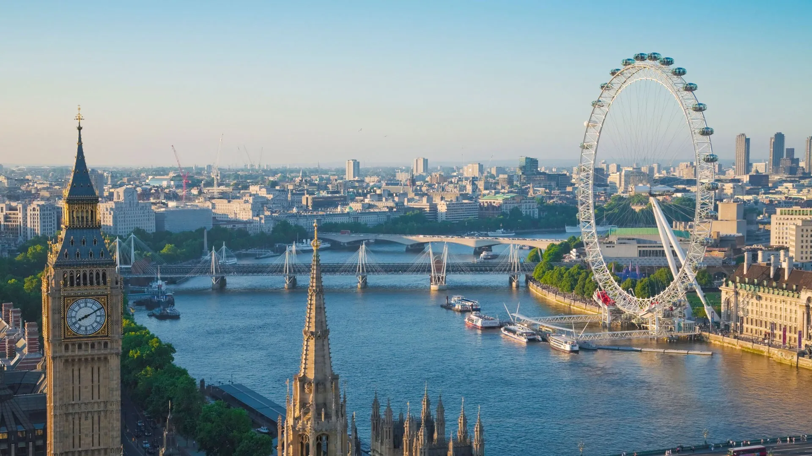
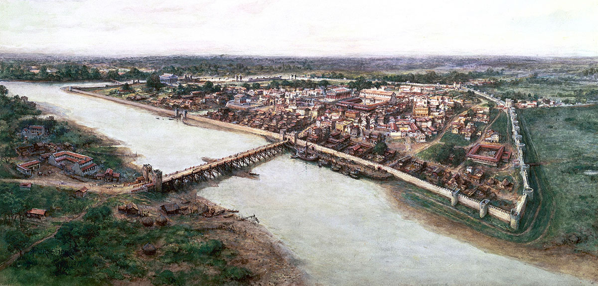
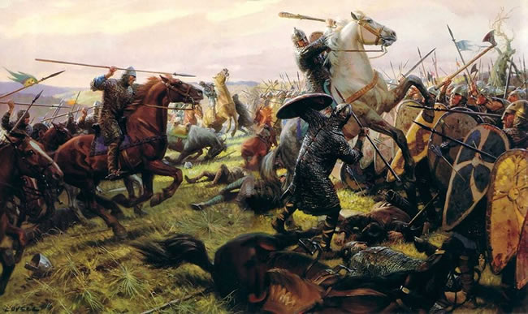
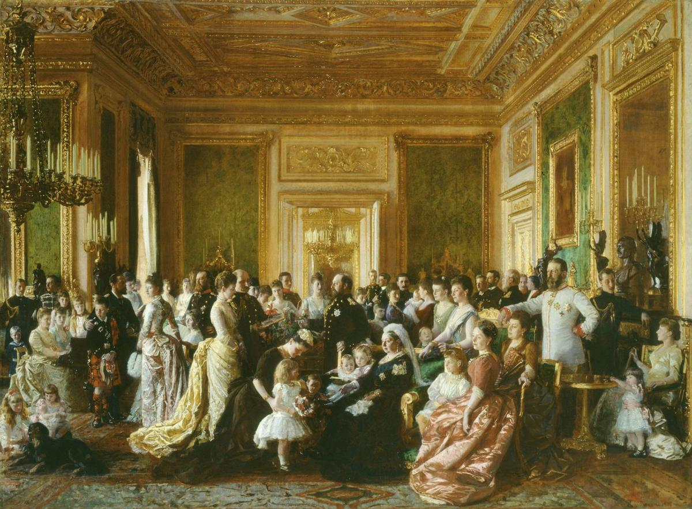
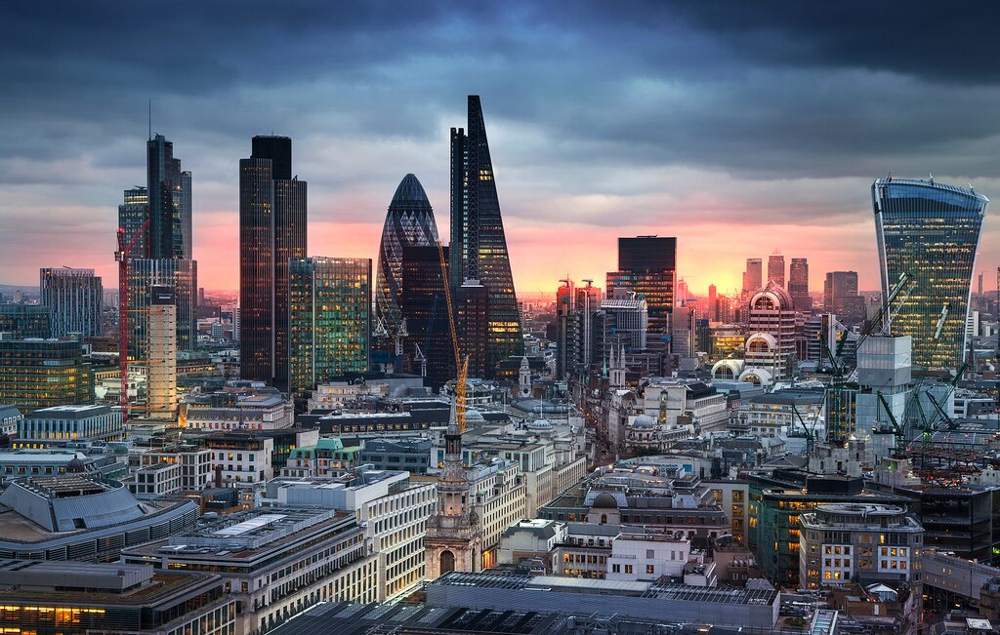
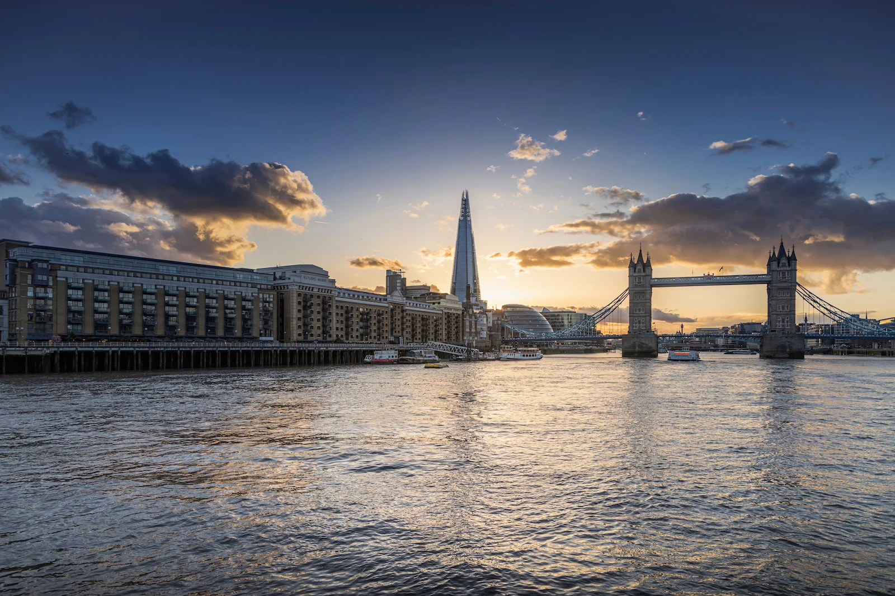
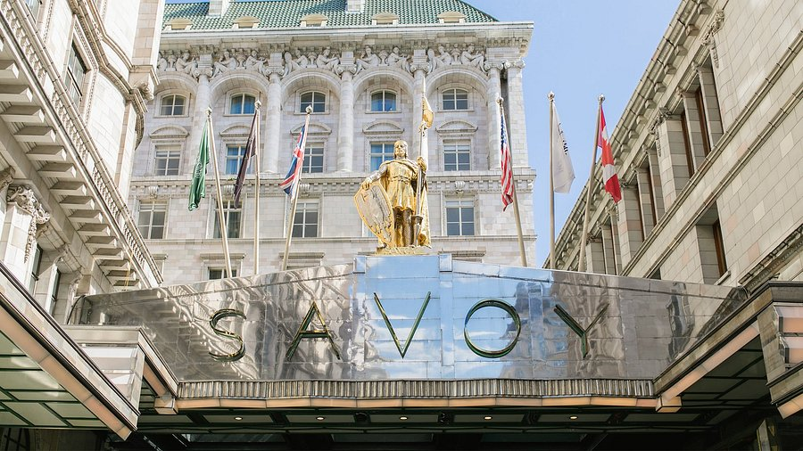

London
Where royal heritage meets urban energy!
curated by Dickey Lam, the Travel Expert
Overview
London, the historic capital of the United Kingdom, is a global powerhouse where centuries of royal tradition meet cutting-edge innovation.
With a diverse population of nearly 9 million, this iconic city serves as a premier hub for finance, arts, and fashion. From the majestic Tower of London to the thriving West End, London offers an unparalleled blend of heritage and modernity.
Location
Southeastern England
Population
~9 Million
Founded
43 AD
Language
English
Royal Heritage
Home to the British Monarchy and Buckingham Palace
UNESCO Heritage
Four World Heritage Sites including Westminster Abbey

The River Thames winds through the heart of London, lined with architectural marvels both old and new. This historic waterway has been the city's economic and cultural lifeline for nearly two thousand years.
History
London’s narrative stretches over two millennia, evolving from a remote Roman outpost into a global capital that has shaped the course of modern history.

Roman Londinium Era
43 AD
Founded by the Romans as "Londinium," the city quickly became a vital commercial port on the Thames. The original Roman wall defined the boundaries of what is now the financial district, known as the City of London.

Norman Conquest Era
1066 AD
Following his victory, William the Conqueror began construction of the White Tower. This era established London as the undisputed capital of England, shifting the royal focus from Winchester to the banks of the Thames.

Victorian Expansion
1837 – 1901
During the Industrial Revolution, London became the largest city in the world. The era saw the birth of the iconic Underground, the building of the Houses of Parliament, and the rise of the British Empire's global influence.

Post-War & Modern Era
1945 – Present
After surviving the Blitz, London reinvented itself as a multicultural metropolis. Today, the skyline is a mix of historic spires and modern glass skyscrapers like the Shard, reflecting its status as a global financial hub.
Culture
Dive into London's eclectic cultural landscape, where royal traditions harmonize with a rebellious spirit. From the sophisticated tea rooms of Mayfair to the vibrant street art of Shoreditch, London is a sensory exploration of British heritage reimagined by a modern, global community.
Cuisine
Tea & Cafe
Festival
Music
Attractions
Discover London's most iconic landmarks and historic experiences that make this global capital truly unforgettable.

British Museum
Two Million Years of Human History
Explore one of the world's oldest and most comprehensive collections, housing treasures like the Rosetta Stone and the Elgin Marbles.
Top 10 Global Museum
8M+ Artifacts
Bloomsbury (Central)
Duration: 3-5hrs

Tower Bridge
The Gateway to the City
Step onto the world-famous glass walkway and witness the majestic Victorian engine rooms of London's most iconic bascule bridge.
Most Photographed
Victorian Engineering
Southwark (Bankside)
Duration: 1-2hrs
Westminster Abbey
The Coronation Church
Follow in the footsteps of kings and queens at this UNESCO World Heritage site, where every British coronation has taken place since 1066.
UNESCO Heritage
Royal Significance
Westminster (Central)
Duration: 2-3hrs


The River Thames
The Liquid History of London
Experience London from the water. Whether taking a high-speed RIB boat or a leisurely river cruise, the Thames offers the best view of the city's evolving skyline.
Historic Waterway
River Cruise
Across London
Duration: 1-2hrs
Guide
Everything you need to know to plan your perfect trip to London. From practical tips to cultural insights, we've got you covered.
Spending
- Currency: British Pound (£ / GBP)
- Exchange Rate: 1 USD ≈ 0.75 GBP
- Payment Method: Contactless and Credit Card
- Average Spending: £70 - £150 per day
Currency Rate: 0.123456
Result:
Transportation
- Black Cab: £10 - £30 (within central)
- Uber / Bolt: £15 - £40 (standard trip)
- The Tube (Metro): £2.80 - £8.50 (daily cap)
Best Place to Stay
The Savoy London
- Type: 5-star Historic Luxury
- Neighborhood: Covent Garden, The Strand
- January-March: USD$750 - $950
- June-December: USD$1,100 - $1,500

Best time to go
May to September
- Winter (Dec-Feb) 2-9℃
- Spring (Mar-May) 9-18℃
- Summer (Jun-Aug) 18-25℃